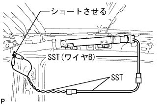
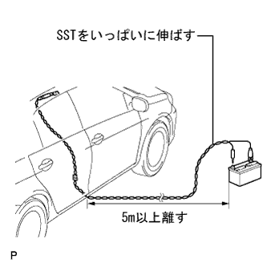
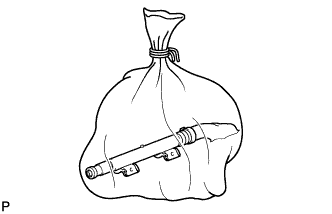
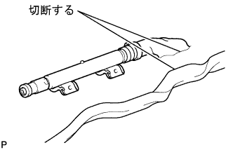
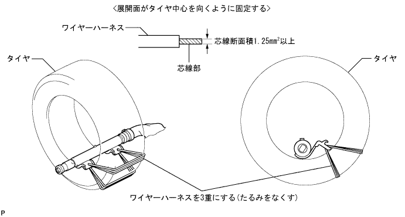
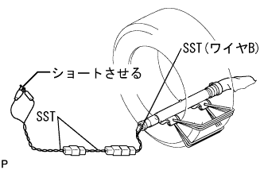
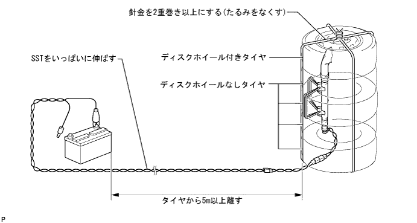
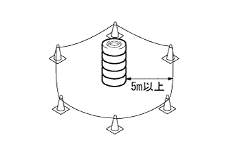

Curtain Shield Airbag Assembly RH Disposal |
| 1. Dispose of Curtain Shield Airbag Assembly RH (When Disposing of Vehicle) |
 |
Deploy curtain shield airbag RH
Connect the following 3 SSTs.
Short the alligator clip and terminal of the SST.
Connect the SST to the curtain shield airbag RH and lock it securely.
 |
Extend the SST fully from the vehicle and place the battery at least 5m away from the vehicle.
After confirming safety inside the cabin and in the surrounding area, connect the alligator clip of the SST to the negative terminal of the battery.
Connect the SST terminal to the positive terminal of the battery to deploy the curtain shield airbag RH.
 |
Disposal Procedure for Curtain Shield Airbag RH
Place the deployed curtain shield airbag RH in a strong, transparent plastic bag, seal it and dispose of it.
| 2. Dispose of Curtain Shield Airbag Assembly RH (When Disposing of Component Alone) |
 |
Cut curtain shield airbag RH
Cut off the deployment section of the curtain shield airbag RH.
Secure curtain shield airbag RH
Using a wire harness (conductor cross-sectional area 1.25mm2or more), secure the curtain shield airbag RH to a tire.

 |
Deploy curtain shield airbag RH
Connect the following 3 SSTs.
Short the alligator clip and terminal of the SST.
Connect the SST to the curtain shield airbag RH and lock it securely.
As shown in the illustration, stack 2 tires, place the tire with the curtain shield airbag RH secured on top of them, then place 1 more tires on top and a tire with disc wheel at the very top.
Using wire with a diameter of 1.8mm or more (general-purpose ordinary iron wire: equivalent to JIS SWM-B), wrap the tires together 2 times or more and tie them securely with no slack.
Extend the SST fully from the curtain shield airbag RH and place the battery at least 5m away from the tires.

 |
Surround the area within a radius of 5m from the outside of the tires with pylons and rope, etc. so that no one can enter.
After confirming safety in the surrounding area, connect the alligator clip of the SST to the negative terminal of the battery.
Connect the SST terminal to the positive terminal of the battery to deploy the curtain shield airbag RH.
Disposal Procedure for Curtain Shield Airbag RH
Place the deployed curtain shield airbag RH in a strong, transparent plastic bag, seal it and dispose of it.